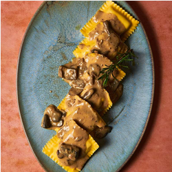
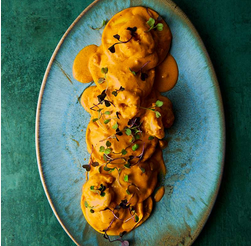
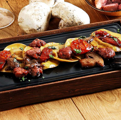
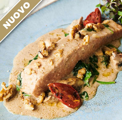
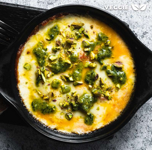
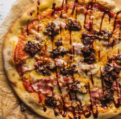

Pasta rellena de cordero lechal al aroma de tomillo.

Pasta rellena de pollo de corral con ciruelas.

Sorrentino de pato y foie con salsa de setas.

Lomo de salmón, crema de leche y queso pecorino.

Provolone al horno con pesto y pistachos y queso.

Pizza Barbacoa ragout con bacon y salsa barbacoa.